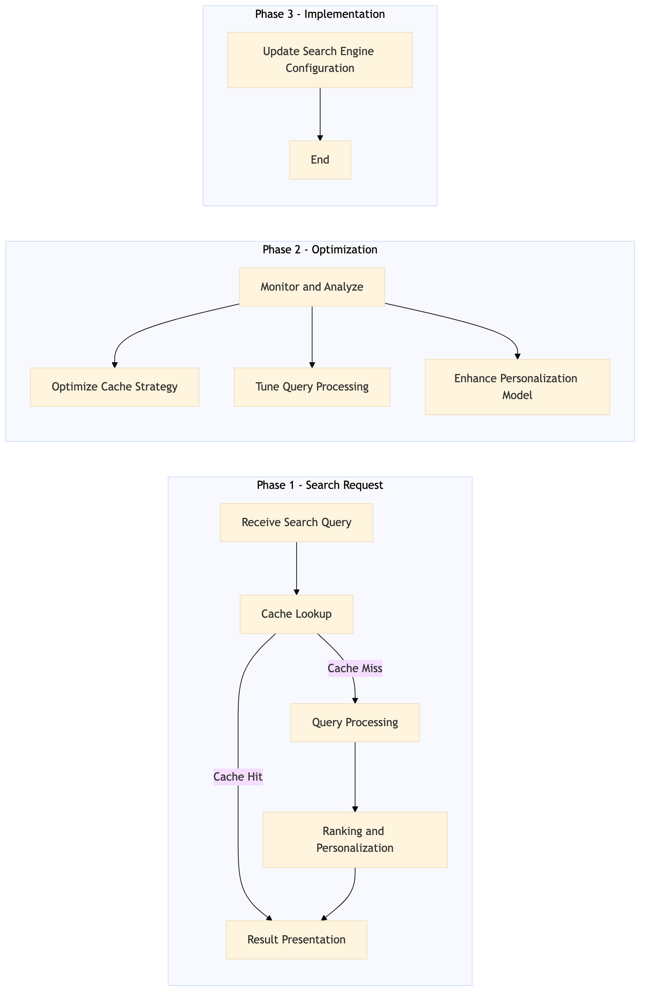

This process document outlines the Search Cache and Performance Optimization for OTA Online Booking and Search, focusing on enhancing search ranking and personalization.
| Trigger | User initiates a search query on Expedia Open World or Partner Central. |
| Outcome | Improved search performance with faster response times and more relevant results, leading to higher user satisfaction and increased bookings. |
| Systems | Expedia Open World Partner Central AWS SageMaker Snowflake Kafka Salesforce Tableau |

Click to enlarge
| Step | Name & Pain Point | Role | System | Input | Output | KPI | Flags |
|---|---|---|---|---|---|---|---|
| 1.1 | Receive Search Query High latency in initial search requests | Search Engine | Expedia Open World, Partner Central | User search query | Processed search request | Response time < 200ms | ⚠ Exception |
| 1.2 | Cache Lookup Inefficient caching strategy | Search Engine | AWS SageMaker, Snowflake | Processed search request | Cached result or cache miss | Cache hit rate > 80% | ◆ Decision |
| 1.3 | Query Processing Slow query processing | Search Engine | AWS SageMaker, Kafka | Processed search request (cache miss) | Processed search results | Processing time < 50ms | ⚠ Exception |
| 1.4 | Ranking and Personalization Inaccurate personalization | Search Engine | AWS SageMaker, Salesforce | Processed search results | Ranked and personalized search results | Personalization accuracy > 90% | ⚠ Exception |
| 1.5 | Result Presentation Low user engagement | Search Engine | Expedia Open World, Partner Central | Ranked and personalized search results | Displayed search results to user | User engagement > 70% | ⚠ Exception |
| 1.6 | Monitor and Analyze High error rates | Data Analyst | Tableau, Snowflake | User interactions with search results | Performance metrics and insights | Error rate < 5% | ⚠ Exception |
| 1.7 | Optimize Cache Strategy Inefficient caching | Data Analyst | AWS SageMaker, Snowflake | Performance metrics and insights | Updated cache strategy | Cache hit rate > 85% | ◆ Decision |
| 1.8 | Tune Query Processing Slow query processing | Data Analyst | AWS SageMaker, Kafka | Performance metrics and insights | Optimized query processing algorithms | Processing time < 40ms | ◆ Decision |
| 1.9 | Enhance Personalization Model Inaccurate personalization | Data Analyst | AWS SageMaker, Salesforce | Performance metrics and insights | Improved personalization model | Personalization accuracy > 95% | ◆ Decision |
| 1.10 | Update Search Engine Configuration Configuration issues | Search Engineer | Expedia Open World, Partner Central | Optimized cache strategy, query processing algorithms, and personalization model | Updated search engine configuration | Overall performance improvement > 10% | ⚠ Exception |